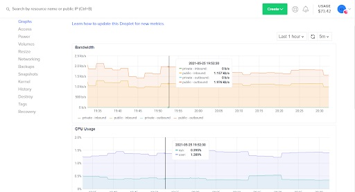
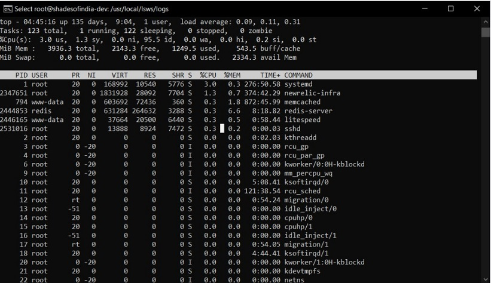

Website Maintenance Processes¶
At Krenovate, we do weekly maintenance activities for clients who have opted for an AMC. In this section, we will learn about all the activities that need to be undertaken
Software Upgrade¶
Importance of Software Upgrade¶
With every new release, the following benefits can be reaped:
- Enhanced security
- Cool new features for an enriching experience
- Improved speed and performance
- Bug fixes for any known issues
- Better compatibility
Read more about software upgrade here.
Updates to be Checked¶
On the assigned day of the week, the below updates are checked:
- Plugin Updates
- WordPress Core updates
Activities to be Performed¶
In order to check for updates, the following activites need to be performed:
- Identify updates required for the client
- Perform the update on a development(desktop)/staging server
- Test for any broken feature/functionality on the site.
- Take a backup of the live site.
- Perform all the updates on Live.
Server Reviews¶
Importance of Server Review¶
Below are reasons to review a server:
- Proactively and quickly detects outages and protocol failures.
- Provides trend identification and capacity planning of the server resources.
- Enables you to address unattended situations and performance bottlenecks, that may lead to revenue loss and downtime.
- Notifies authorized personnel at your site in the event of a problem.
- Helps system admins to verify and confirm the availability and status of the servers and application processes.
- Helps you troubleshoot server issues and improve server performance.
Activities to be Performed¶
To review a Server, on the assigned day of the week, the following activites need to be performed:
- Go to all digital ocean accounts and check for unused droplets.
- Confirm with the team, and delete (droplets) if unused.
-
Check for any unusual spike in the Digital Ocean metrics (CPU/Bandwidth Usage). The below image shows an example:

-
Report/Investigate in case of spikes
- Login to each server (SSH login), take a look at server logs
- You can go to server logs at
“cd /usr/local/lsws/logs” -
Report/Investigate in case of unusual logs. For example:
- stderr.log log files contains LSAPI Childern shortage error
-
Check storage available and resources usage [using “top”]

-
Check for SSL expiries and Fix it.
- Make sure that the backups are being automatically taken. See Backups below.
Backups¶
Importance of Backups¶
A good backup solution creates a copy of your latest data and stores it safely so that it is available for a quick restore in the case of an unforeseen event, like:
- Human Error
- Website Hack
- Natural Disasters
- Server Crash or Failure
- Unsuccessful updates
Read more about Backups here.
Activities to be Performed¶
We have an automatic backup schedule for every client which we manage.
How to Setup Backup for a Client¶
Follow the steps below in case you have to setup a backup for a client website:
- We use Updraft plugin to run our automatic backups.
- Install Updraft Plugin from here: "How to install Updraft Plus"
- We use Dropbox as our remote storage.
- Connect Updraft to Dropbox. [ You can get the dropbox credentials from the team ]
- Fix a daily Database backup and Weekly Full file backup at night.
- Add your name in the settings to receive email notifications in case backup falls.